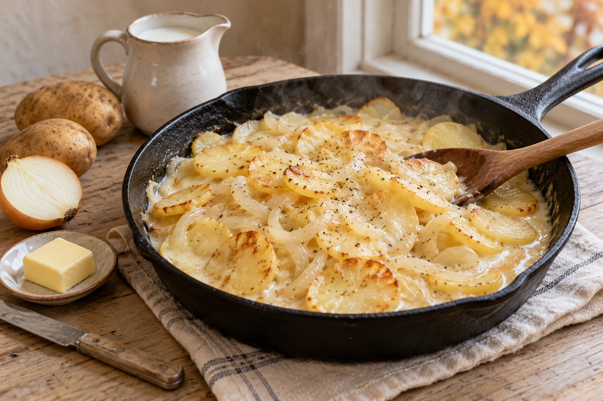

Milk Potatoes
Jump to recipe ↓
The Story
This dish is deceptively simple, but it represents a high level of "kitchen craft." It's easy to boil a potato. It's much harder to make it delicious with almost nothing. This recipe doesn't just cook the potatoes; it transforms them in a two-step process.
First, the potatoes are fried with onion, building a deep, savory flavor (the Maillard reaction). Then, milk is added to simmer, which simultaneously finishes cooking the potatoes and creates its own rich, creamy sauce. This isn't just "potatoes in milk"—it's a deliberate process to create the highest possible value from the humblest ingredients.
The Recipe
- Prep Time
- About 10 minutes
- Cook Time
- About 20–30 minutes
Prep/cook times are estimates; cook until the potatoes are tender.
Ingredients
- 4-5 medium potatoes, sliced thin
- 1 onion, sliced thin
- 2 Tbsp. lard, bacon fat, or butter
- Salt and pepper
- ~2 cups milk (enough to just cover the potatoes)
Instructions
- In a large skillet with a lid, melt the fat over medium heat.
- Add the sliced potatoes and onions. Fry, stirring occasionally, until the potatoes are just starting to get golden brown and are almost cooked through (about 10-15 minutes).
- Season generously with salt and pepper.
- Pour the milk over the potatoes and onions in the skillet.
- Bring to a simmer (do not boil), then reduce the heat to low, cover, and let it gently bubble for another 5-10 minutes.
- The milk will reduce, and the starch from the potatoes will thicken it into a cream sauce. Serve hot.
The Economic Lesson
Principle: Human dignity is expressed through craft. Process is what creates value.
The ingredients (potatoes, milk, onion) are commodities. They have a base value. The process (frying then simmering) is what makes them valuable. This is a lesson in "human capital." Your raw time is a commodity. Your process—your skill, your craft, your unique way of doing things—is what makes your time valuable.
A centralized system wants to turn you into a commodity: a cog that just "boils the potatoes." A system of freedom, built on human dignity, encourages you to be a craftsman: to develop a process that creates value no one else can. This is the source of all real economic growth, and it is a power given to every individual, not to any government.
Learn more at The Trading Post →